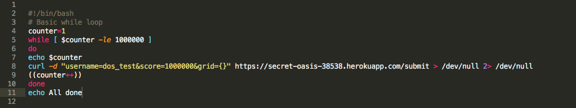
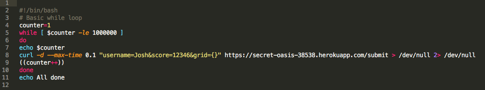

I was hired as a security consultant, to look for weaknesses in a potentially vunerable web application. The application is a game and game server, specifically the game 2048. I was primarily focused on exploiting the server that holds the score information. There are three routes for the server, a GET index, GET scores.json and POST submit.
Black Box Testing- I began with tests for simple things covered in class, without looking at the code: XSS using curl on the submit route and NoSQL injection attacks in the scores.json route by using the query operand [$ne]. The XSS attack was sucessful, but the injection was not, so I then viewed the code begin white box testing.
White Box Testing- Looking into the code didn't provide any immediately notable vunerabilities, like hardcoded passwords or bad coding practice. In fact, it just explained why my previous attempt at injection didnt work, since instead of using the find function on the collection to query for usernames, he used a filter function. However, I noticed that this app uses cors as a dependency. When looking into this, the default configuration of the cors dependency includes "origin" = "*", giving access-control-allow-origin power to any origin, since the asterisk is a wildcard. Additionally, by looking at the code I knew the server used a MongoDB database. Access to the Heroku app allowed me to go into mLab and check that this app uses the free version of MongoDB, which I decided to spam in an DDOS attack, or Distributed Denial of Service Attack. I used a bash script in terminal(s) to try to overwhelm the application, either through Heroku or MongoDB, as I wasn't sure what would break first.
Tools: curl, bash script
Provide an overview of all the security and privacy issues you identified. This section should be written for non-technical managers who do not have technical expertise and do not have time to read the entire document. Write this section using lay language.
Cross Site Scripting (XSS)
Found in index.js, in the POST submit path
Severity of issue: Medium. Allows attacker to hijack the page using JavaScript, allowing potentially malicious actions, such as redirecting the user to an undesired site, taking control of the 2048 site, or accessing cookies or local storage (if the application has them, although this app does not). However can be fixed relatively easily through character stripping.
Description of issue: Cross-Site Scripting is when user input uses JavaScript to trick the application into behaving differently. By using script tags in the username value, it allows editing of the original content
This can be found using curl, however would also work from the 2048 webpage, as either way the submit route does not strip characters.
An example of how to change the username would be to use curl --data "username= <"script">alert("Brigid");&score=79&grid={}" URL (without the quotes within the script tag, those are there to prevent this page from having an alert show up)


This can be resolved by validating the user input, and checking for concerning such as "<" or ">". They can be replaced with equilvant values, like & lt; or & gt; (without the space between & and letters)SHOW CODE
Access-Control-Allow-Origin
Location or page where issue was found
Severity of issue (e.g., low, medium , or high). Justify your answer.
Description of issue. How did you find it? A screenshot of problem is excellent.
Proof of vulnerability. Show pictures or it didn't happen.
Resolution. Make recommendation(s) on how issue can be resolved. Show code if possible.
Distributed Denial of Service
Issue (e.g., database injection, really bad programming practice)
Location or page where issue was found
Severity of issue (e.g., low, medium , or high). Justify your answer.
Description of issue. How did you find it? A screenshot of problem is excellent.
Proof of vulnerability. Show pictures or it didn't happen.
Resolution. Make recommendation(s) on how issue can be resolved. Show code if possible.




needs Issue (e.g., database injection, really bad programming practice) Location or page where issue was found Severity of issue (e.g., low, medium , or high). Justify your answer. Description of issue. How did you find it? A screenshot of problem is excellent. Proof of vulnerability. Show pictures or it didn't happen. Resolution. Make recommendation(s) on how issue can be resolved. Show code if possible
You can also list future considerations and recommendations with costs.
Could fix access-control-allow-origin by only accepting